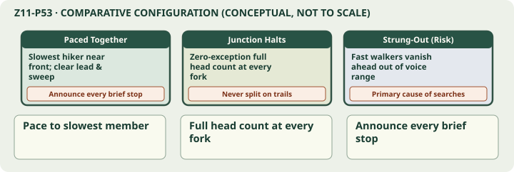

Z11-P53 · Navigation, weather and rescue · Adapted historical material
Prevent group separation at forks, rest stops and steep terrain
Eliminate the most common cause of preventable outdoor searches through disciplined group spacing and junction pauses.
When it applies · Families, youth outings, mixed-fitness hiking groups and winter ski/snowshoe parties.
Equipment · Whistle per person, shared map copy and designated lead/sweep roles.

Actions
- Set group travel speed strictly to the slowest member, placing slower or less experienced hikers near the front behind the lead so they are never isolated at the back.[E11, ED]
- Enforce a zero-exception **junction stop rule**: the lead ALWAYS halts at every trail fork, creek crossing, road intersection and major viewpoint until the rear sweep arrives and confirms the full head count.[E11, ED]
- Keep everyone within visual or clear whistle range in poor visibility, dense woods or steep climbs, and announce every brief bathroom/pack-adjust stop directly to the sweep so nobody steps off-trail unnoticed.[E11, N07, ED]
Failure recognition · Stepping fifty feet off a wooded trail for a quick break without telling the sweep, returning to find the group gone and turning the wrong way at an unmarked fork.[E11, T06]
Verify · Confirm head count matches at every stop, sweep knows whenever anyone pauses and every member carries a whistle.[E11, E02, ED]
Stop or change course · If the gap between front and back stretches out of sight/voice range, stop immediately via whistle signal and regroup before moving another yard.[E11, ED]
Evidence and editorial notes
- E02 · NPS · Ten Essentials (current web edition)
- Section: Navigation; insulation; emergency shelter; emergency food and water · Conditions: Outdoor trips; adjust kit to season and route
Support: Carry essential systems including navigation, insulation, light, water and emergency shelter.
Limitations: Carrying items without practice or cold-weather verification does not ensure readiness. · Conflicting evidence: None; baseline kit system architecture.
Editorial note: Supports failure-mode packing and kit verification cards. · Specialist reviewer: Field education and search and rescue
Primary source · checked 2026-11-24 - E11 · NPS · Hike Smart (current web edition)
- Section: Plan your hike; Stay together · Conditions: Groups on hiking routes
Support: Choose a route suited to the group's abilities and hike at a pace that keeps the group together.
Limitations: Fast hikers moving ahead at junctions is a leading driver of preventable separation. · Conflicting evidence: None; aligns with SAR prevention principles.
Editorial note: Core reference for group accountability and pacing cards. · Specialist reviewer: Group leaders and search and rescue
Primary source · checked 2026-11-24 - N07 · NWS · Fog Safety (current web edition)
- Section: Fog Safety > Visibility Loss and Travel Hazards · Conditions: Dense fog, valley mist, sea fog and blowing-snow whiteout
Support: Fog and whiteout collapse visual landmarks and depth perception rapidly, causing disorientation and unintentional terrain/traffic hazards; halt exposed travel early and rely on verified checkpoints or stay put.
Limitations: Compass bearings alone cannot reveal hidden cliffs, thin ice or drop-offs in zero visibility. · Conflicting evidence: Aligns with B014-P11 whiteout guidance.
Editorial note: Supports whiteout/fog stop thresholds and short-leg navigation boundaries. · Specialist reviewer: Meteorology and search and rescue
Primary source · checked 2026-11-24 - T06 · NPS · Outdoor Emergency Plan (current web edition)
- Section: If you get lost or hurt; call for help · Conditions: Outdoor US emergency
Support: Communicate location, last known point, situation and needs. Stay put when unable to establish a safe route unless immediate danger requires movement.
Limitations: Cell signal is unreliable in backcountry terrain; pre-trip plans bridge communication gaps. · Conflicting evidence: None; core lost-person decision rule.
Editorial note: Foundation for stay/signal/move and dispatch handoff cards. · Specialist reviewer: Search and rescue
Primary source · checked 2026-11-24
Source lineage · NPS Hike Smart and B014 r01 slot R10; new manuscript · Classification · Adapted historical material.